Papas con chorizo et avocat
⏱ 30 min · 💪 ≈ 35 g de protéines
Une grosse portion par recette · faciles et riches en protéines · à importer par lien dans Samsung Food.
⏱ 30 min · 💪 ≈ 35 g de protéines

⏱ 25 min · 💪 ≈ 60 g de protéines
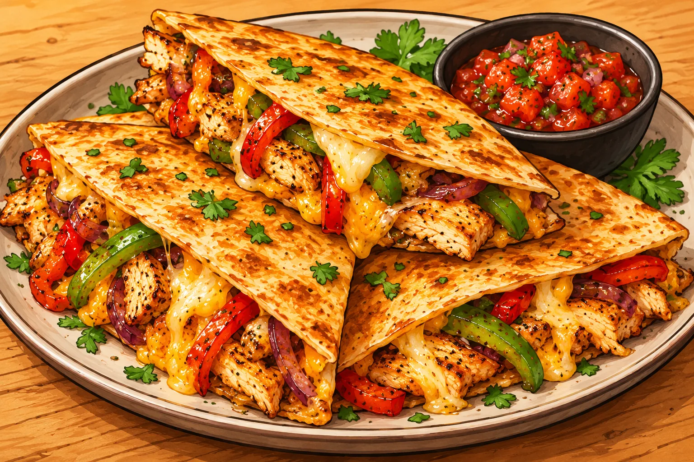
⏱ 20 min · 💪 ≈ 60 g de protéines

⏱ 25 min · 💪 ≈ 52 g de protéines
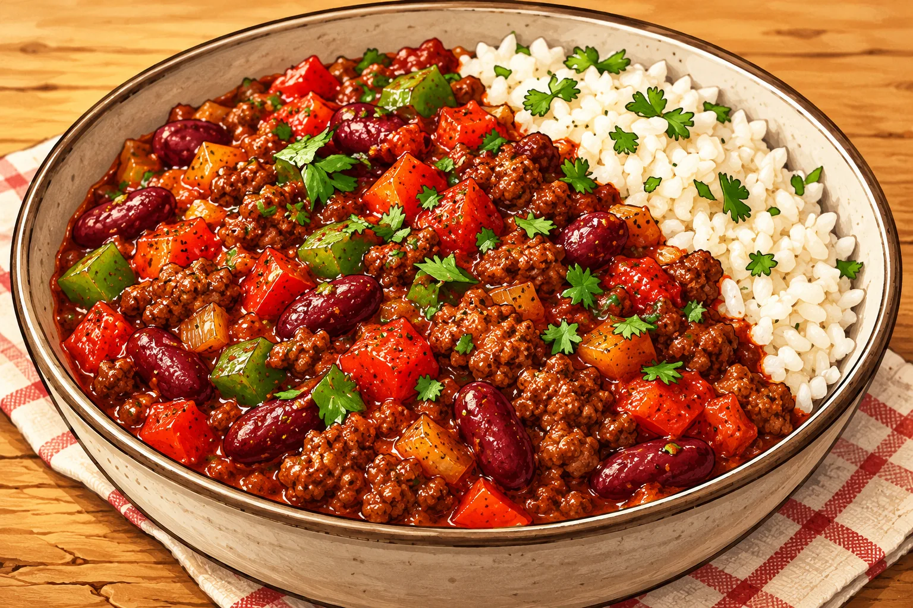
⏱ 30 min · 💪 ≈ 53 g de protéines
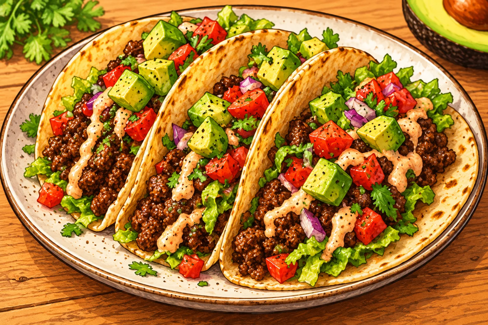
⏱ 20 min · 💪 ≈ 46 g de protéines
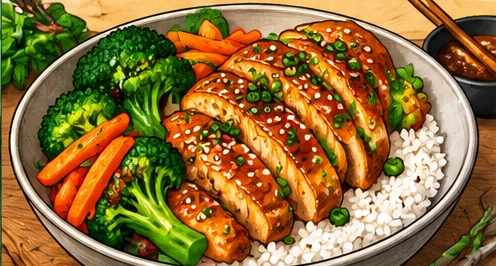
⏱ 30 min · 💪 ≈ 58 g de protéines

⏱ 20 min · 💪 ≈ 56 g de protéines
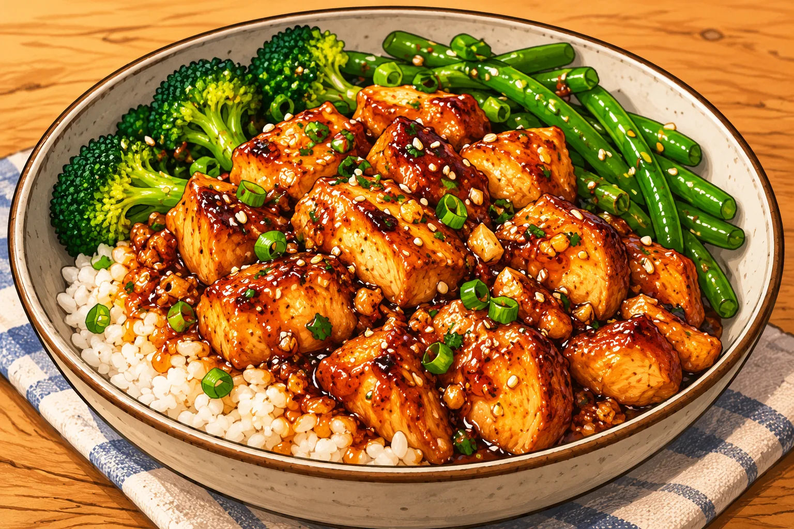
⏱ 25 min · 💪 ≈ 55 g de protéines
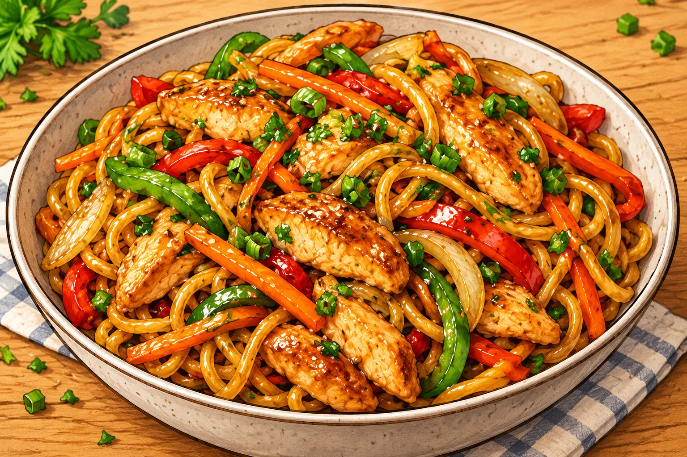
⏱ 20 min · 💪 ≈ 60 g de protéines
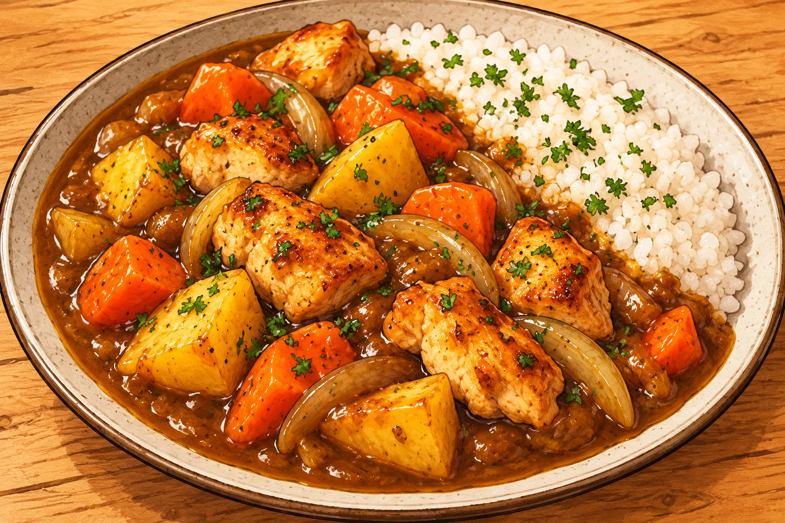
⏱ 30 min · 💪 ≈ 55 g de protéines

⏱ 20 min · 💪 ≈ 54 g de protéines

⏱ 25 min · 💪 ≈ 70 g de protéines

⏱ 25 min · 💪 ≈ 53 g de protéines

⏱ 20 min · 💪 ≈ 61 g de protéines
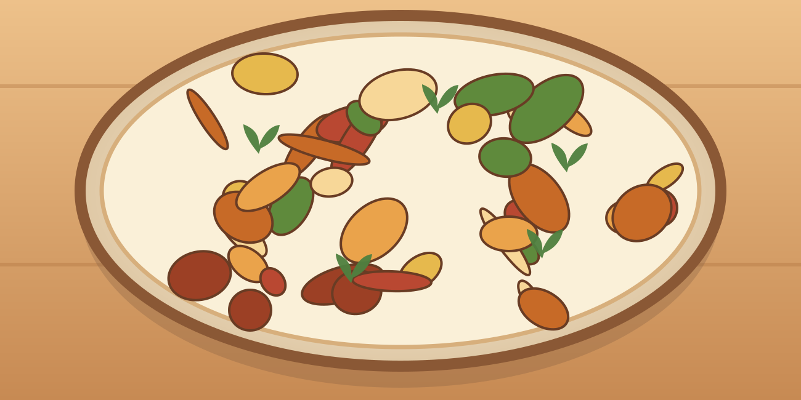
⏱ 25 min · 💪 ≈ 43 g de protéines

⏱ 25 min · 💪 ≈ 64 g de protéines

⏱ 25 min · 💪 ≈ 63 g de protéines

⏱ 25 min · 💪 ≈ 56 g de protéines
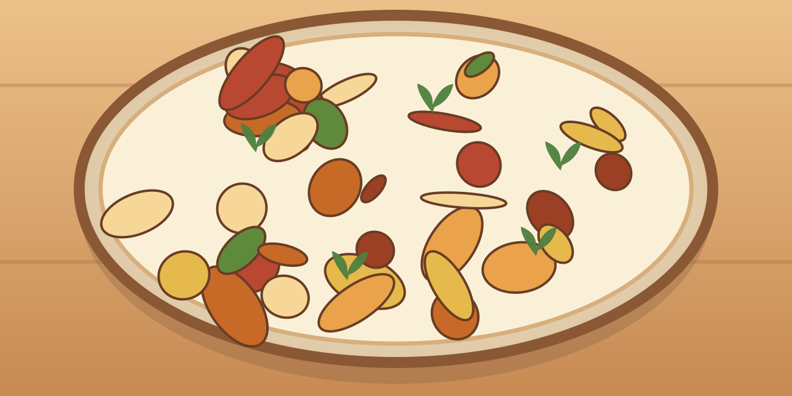
⏱ 30 min · 💪 ≈ 36 g de protéines
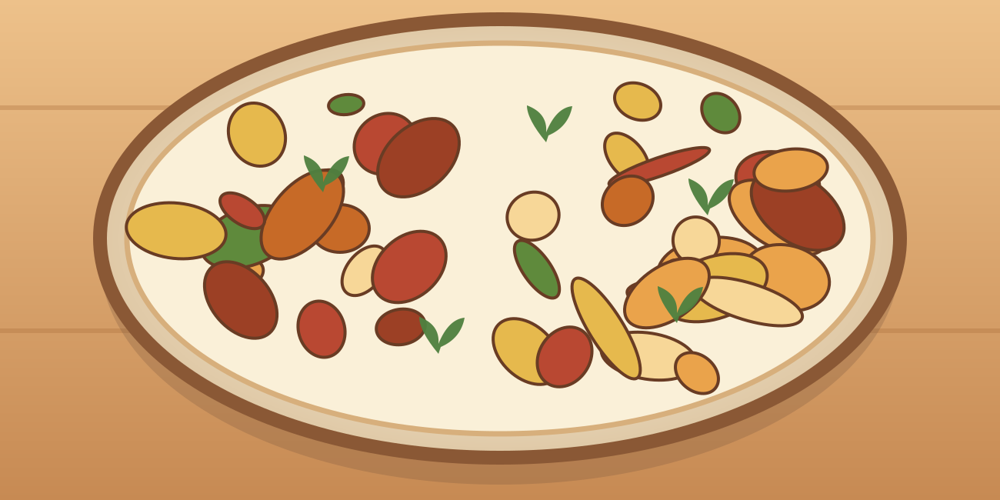
⏱ 20 min · 💪 ≈ 58 g de protéines
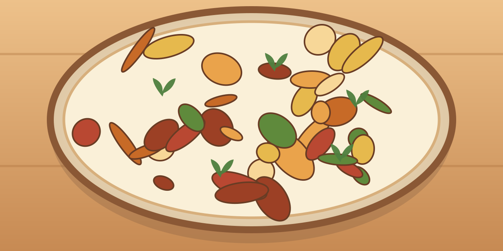
⏱ 30 min · 💪 ≈ 49 g de protéines

⏱ 30 min · 💪 ≈ 48 g de protéines
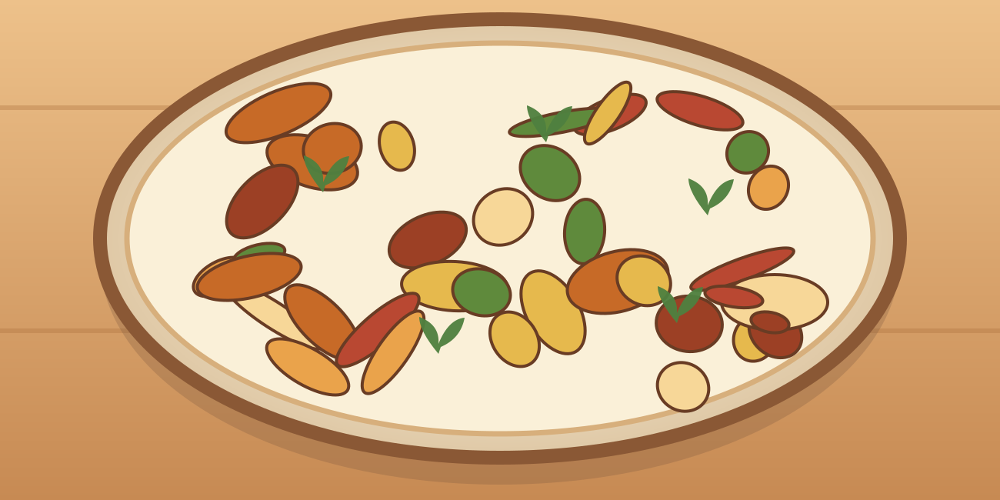
⏱ 30 min · 💪 ≈ 75 g de protéines
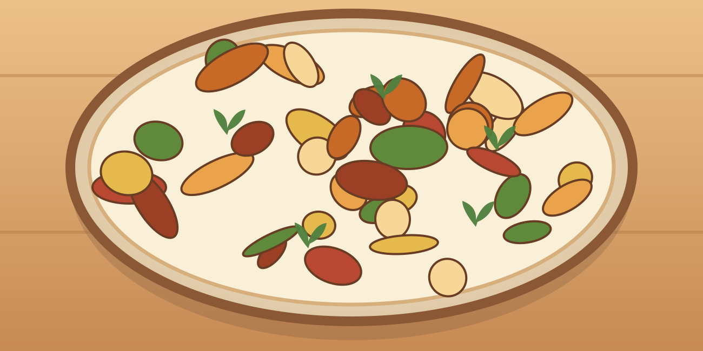
⏱ 25 min · 💪 ≈ 66 g de protéines

⏱ 25 min · 💪 ≈ 57 g de protéines
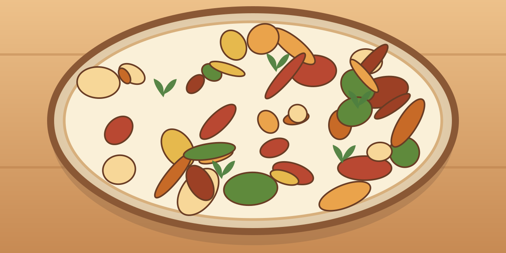
⏱ 20 min · 💪 ≈ 61 g de protéines
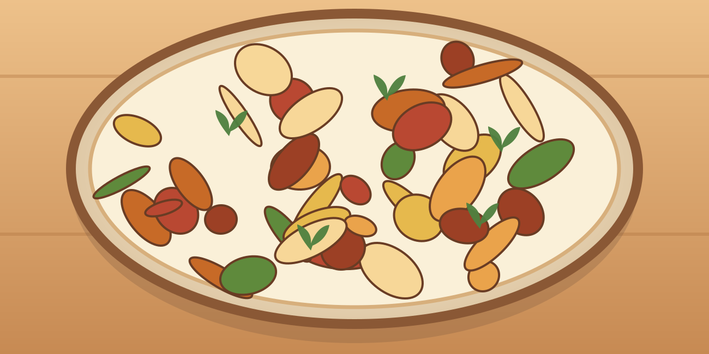
⏱ 25 min · 💪 ≈ 57 g de protéines

⏱ 25 min · 💪 ≈ 67 g de protéines

⏱ 25 min · 💪 ≈ 42 g de protéines